原文连接:https://www.cnblogs.com/caozyblogs/p/caozyblogs.html
1.官网下载Jdk
这里给出官网下载网址：https://www.oracle.com/technetwork/java/javase/downloads 。
1.1 打开之后出现如下界面：

1.2选择对应版本：这里选择Jdk8版本。
最新的不一定是最好的，稳定才是王道。
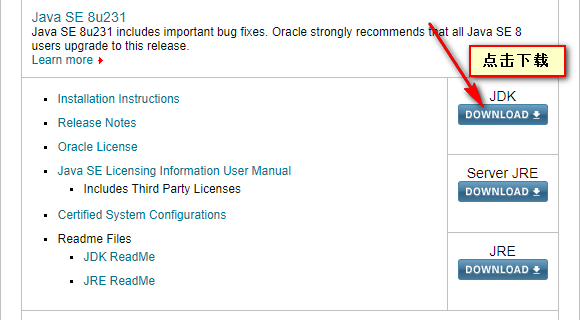
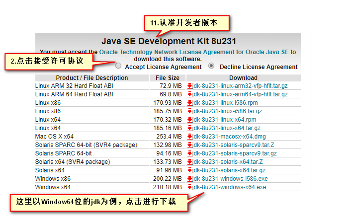
2.安装
2.1 双击安装包打开，点击下一步。
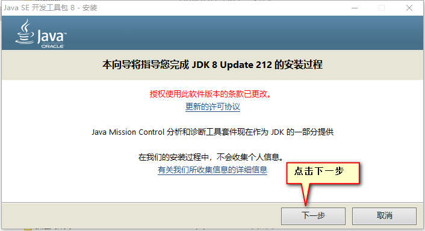
2.2 点击更改路径路径，然后点击下一步。
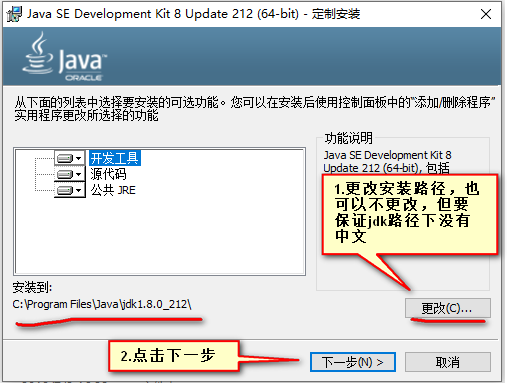
2.3 点击确定

2.4 安装完成，关闭
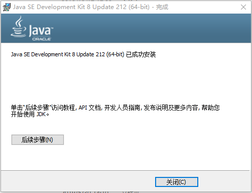
3.环境配置 右击我的电脑 --> 属性 --> 高级系统设置。
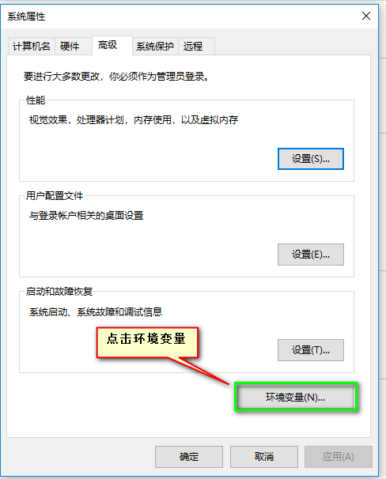
环境配置总共三步
3.1 JAVA_HOME: 配置JDK的安装目录
上边是用户变量，下边是系统变量，在这里说一下它们的区别：用户变量只针对当前的电脑用户，系统变量则针对所有用户。
在这里以系统变量为例。
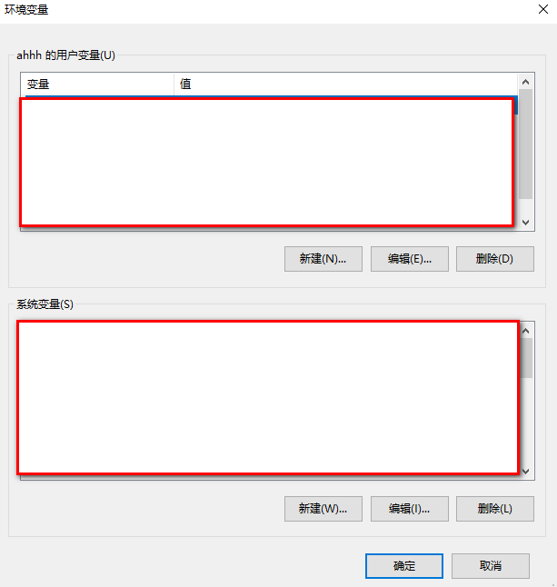
找到JAVA_HOME变量，没有则新建。
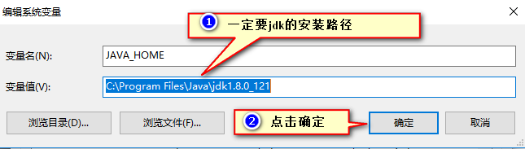
3.2 配置PATH：配置JDK安装目录下的bin(命令)
找到PATH变量，双击进入 点击新建
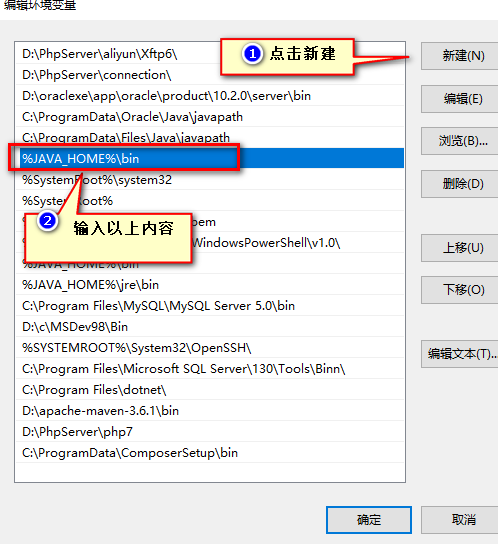
3.3 配置CLASSPATH变量:
“.”代表当前目录 (.class文件的目录 : java文件的目录)
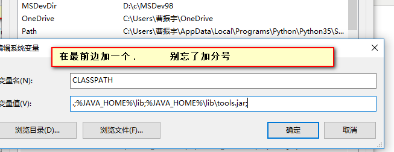
到这里，整个jdk的安装配置就结束了。
如果不确定的话 可以进行测试：
window+R打开-->输入cmd --> 打开命令行 输入java
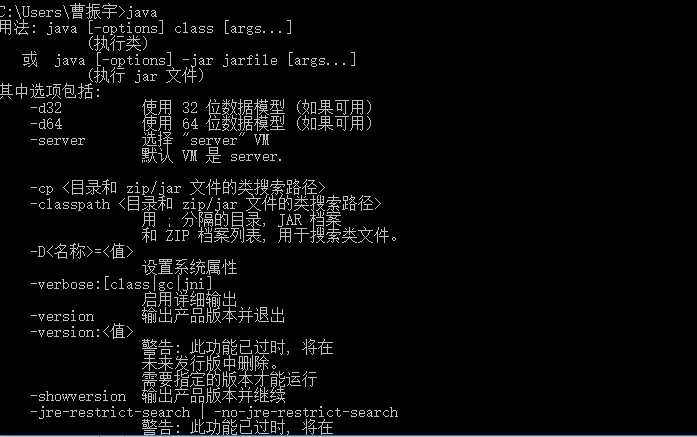
输入 javac
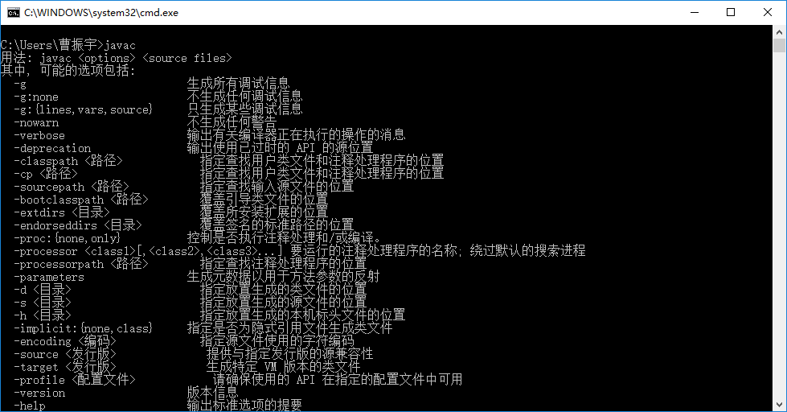
输入 java -version （java后边有空格）查看版本号
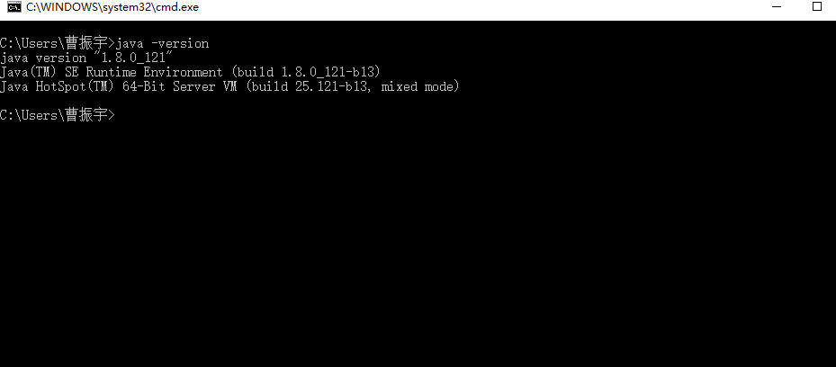
4.第一个HelloWorld程序
4.1在D盘下新建一个以 .java结尾的文本文件 文件名 为HelloWorld.java
双击打开文件 输入以下内容
public class HelloWorld{
public static void main(String[] args){
System.out.println("Hello World");
}
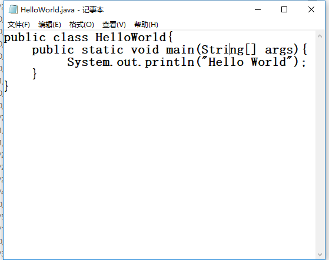
CTRL+s保存
4.2在当前文件所在目录下输入cmd，进入命令行
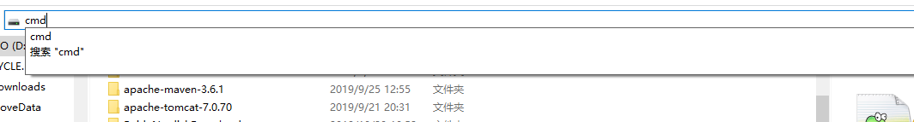
输入命令：编译：javac HelloWorld.java
运行：java HelloWorld
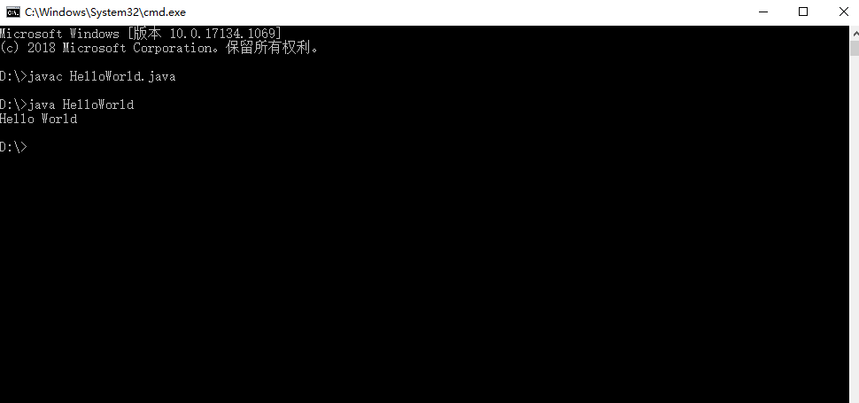
到这里 第一个HelloWorld程序开发就结束了
第一次写博客 还请大家提出宝贵意见